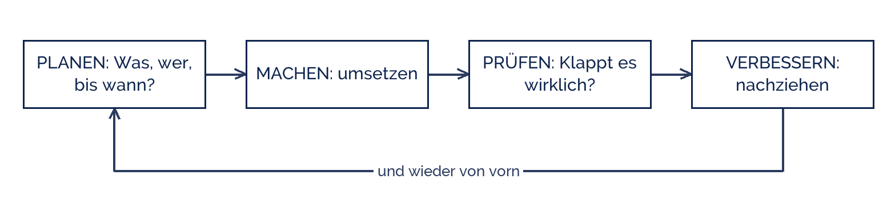

IndigoBunting
IndigoBunting
Good morning!
Nur das Schöne wird die Welt retten!
Fjodor Dostojewski
Nicht verzagen, Doc Alvers fragen!
Informatik — Klasse 9
Planen, machen, prüfen, verbessern
Der Qualitätskreislauf — und wie ein Team sich organisiert
Nicht verzagen, Doc Alvers fragen!
Kapitel 01
Der Qualitätskreislauf
Vier Schritte, die sich wiederholen
Nicht verzagen, Doc Alvers fragen!
Planen, machen, prüfen, verbessern

Der Kreis dreht sich mehrmals im Projekt, nicht nur einmal am Ende
Wer erst zum Schluss prüft, findet die Fehler dann, wenn keine Zeit mehr ist
Nicht verzagen, Doc Alvers fragen!
Warum gerade das Prüfen so oft ausfällt
Es fühlt sich an, als würde man nicht vorankommen
Es macht Arbeit sichtbar, die man nachbessern muss
Und man muss zugeben, dass etwas noch nicht funktioniert
Genau deshalb steht das Prüfen im Plan — mit einem festen Termin
Faustregel: nach jeder Doppelstunde einmal ausprobieren, ob alles noch läuft
Nicht verzagen, Doc Alvers fragen!
Kapitel 02
Das Team
Rollen, Absprachen, Meilensteine
Nicht verzagen, Doc Alvers fragen!
Rollen in einem kleinen Team
| Rolle | kümmert sich um | heißt nicht |
|---|---|---|
| Leitung | Überblick, Termine, Nachfragen | macht alles allein |
| Umsetzung | den Hauptteil des Produkts | arbeitet ohne Absprache |
| Test | ausprobieren, Fehler notieren | darf nichts bauen |
| Doku | Screenshots, Verlauf, Beschreibung | schreibt am Ende alles |
Rollen sind Zuständigkeiten, keine Käfige — geholfen wird trotzdem überall
In einem Dreierteam übernimmt jeder zwei Rollen. Das ist normal
Nicht verzagen, Doc Alvers fragen!
Absprachen, die Streit ersparen
| Frage | wird am Anfang geklärt |
|---|---|
| Wo liegen die Dateien? | ein Ort, den alle erreichen |
| Wie heißen die Dateien? | projekt-v1, projekt-v2 — nicht „final-final“ |
| Wann treffen wir uns? | fester Termin je Woche, auch kurz |
| Was ist bis wann fertig? | Meilensteine mit Datum |
| Wer entscheidet im Zweifel? | vorher festlegen, nicht mittendrin |
Fünf Minuten am Anfang sparen später Stunden
Nicht verzagen, Doc Alvers fragen!
Kapitel 03
Meilensteine
Woran man merkt, dass man im Plan ist
Nicht verzagen, Doc Alvers fragen!
Unsere Meilensteine bis Mai
| Wann | Was steht dann |
|---|---|
| Ende Februar | Thema und Anforderungsliste stehen |
| Anfang März | Ablaufskizze und Aufgabenverteilung stehen |
| Ende März | Grundgerüst läuft |
| Mitte April | alle Kernfunktionen laufen |
| Ende April | getestet, Fehler behoben, Doku fertig |
| Mai | Präsentation |
Ein Meilenstein ist erreicht oder nicht — „fast“ gibt es nicht
Wer einen Meilenstein reißt, sagt es sofort, nicht in der Woche darauf
Nicht verzagen, Doc Alvers fragen!
Planen, machen, prüfen, verbessern — und dann wieder von vorn. Wer das Prüfen weglässt, spart keine Zeit, sondern verschiebt sie.
Merksatz
Nicht verzagen, Doc Alvers fragen!
Fun Facts: Planen im Team
Der Kreislauf heißt in der Fachwelt PDCA — plan, do, check, act
Er stammt von W. E. Deming, der damit nach 1950 die japanische Industrie mit prägte
Brooks' Gesetz: mehr Leute in ein verspätetes Projekt zu stecken, macht es noch später
Grund: jeder Neue muss eingearbeitet werden — und alle müssen sich absprechen
Profis machen täglich ein Stand-up: drei Minuten, im Stehen, drei Fragen
Nicht verzagen, Doc Alvers fragen!
Eure Aufgabe heute
Teams bilden — drei Personen, ausnahmsweise auch zwei oder vier
Rollen verteilen und auf einem Blatt festhalten
Die fünf Absprachen aus Kapitel 2 beantworten und aufschreiben
Aus euren Ideen drei Themen auswählen und begründen, warum sie machbar sind
Nächste Woche fällt die Entscheidung — bringt eure Liste mit
Nicht verzagen, Doc Alvers fragen!